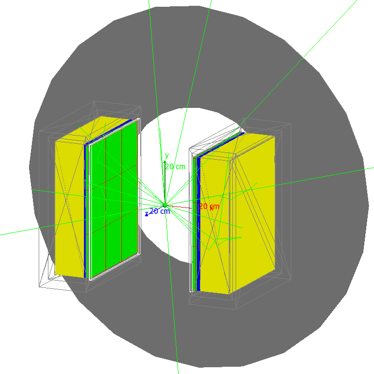

Welcome to ForteModel’s documentation!¶
ForteModel is a repository for simulation scripts created with the Geant4 Application for Tomographic Emission (GATE) to be used with a model of the Phillips/ADAC Forte dual headed positron camera.
GATE is a Monte Carlo radiation transport and detector simulation software. A model of Forte detectior has been created using GATE and validated by experiments a the University of Birmingham’s Positron Imaging Centre. The objective of this repository is create a single place where simulation scripts can be catalogued, described, and made available to the public and other researchers.
